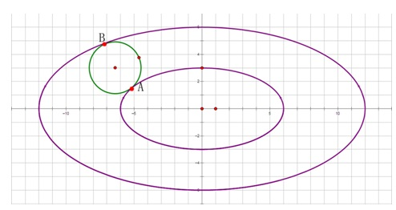

Background
椭圆是平面内到定点F1、F2的距离之和等于一个定值（大于|F1F2|）的动点P的轨迹，F1、F2称为椭圆的两个焦点
。以下内容均发生在二维平面。DescriptionLWD垂涎YSY星球很久了，他总是幻想着自己有一天能到YSY星球上去生
活。好心的ZWD决定帮他一个忙，用他的宇宙飞船把LWD送上YSY星球。因为ZWD的飞船不能飞得太远，所以飞船只能
绕两个定点作椭圆轨道的飞行。并且因为ZWD还有更重要的事情要做，所以只想沿着YSY星球表面高速掠过，然后把
LWD丢出去。理论上来说，ZWD飞船的椭圆轨道与YSY星球会有两个切点，如下图，有A，B两个切点，所以说ZWD可以
选择在到A点把LWD丢出去或者到B再丢。但是ZWD想让他的椭圆轨道想尽量小，所以他会选择A点。由于ZWD飞船的导
航系统被拿去送给ZWD工作过的飞船驾驶学校作纪念了，所以他想请你帮助他解决导航的问题。现在你知道椭圆轨
道的两个焦点和YSY星球的坐标和半径，请你粗略地告诉ZWD LWD会降落在何处。
